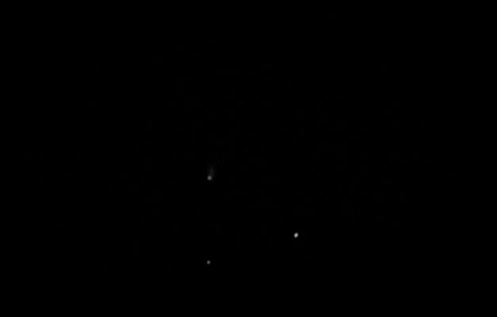

Neowise
However, I didn’t fully enjoy the sunset because I don’t want to miss Neowise. I picked the spot and set up the tripod for taking the picture. Then one person came by and stood pretty close to me which made me uncomfortable – social distance remember! Later one, we found out that he also tried to take photo and he wanted my spot. He mentioned that I took the best spot then he moved to another place nearby.
Neowise started its show and I finally got enjoy it. It was bright and it sat below big dipper. It took me three tries to see it. I will have to wait another 5000 years to see it again. I hope by that time, I am not too old.
I started taking pictures at 9:00PM but I could not get a good shot. I was there till 2:30AM. This is the best shot I got for these five and half hours. See the top one with a tail. That is Neowise.

When I showed this photo to my daughter, her comment was “Camera is dusty. You should wipe it.” This is our third attempt.
×